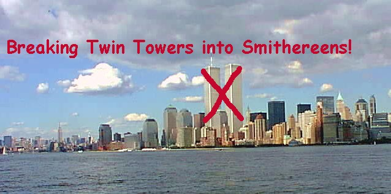
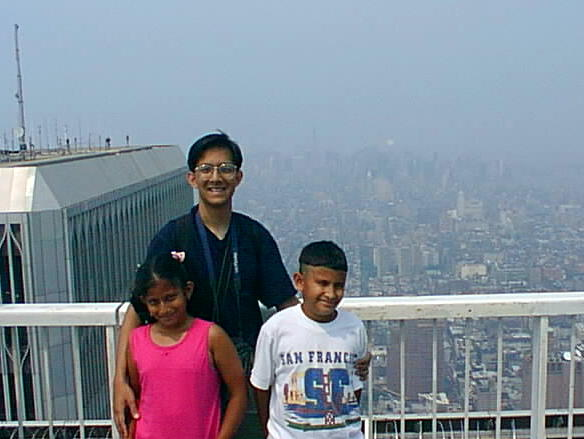

|
|
||||
|
 The fallen Twin Towers The fallen Twin Towers stopped gracing the skyline of Manhattan from the time the vile gang of bin Laden-financed terrorists belonging to al-Qaeda brought down the building on September 11, 2001. What a shame! The planes that were hijacked only minutes before the cataclysmic event that would convert the graceful building into a heap of rubbles were commandeered by terrorists such as Mohammad Ata and his accomplice who were disgruntled young Arabs. One glue that bound them tight was their hate for America. Ever since the World Trade Center was built starting from late sixties and ending in early seventies, the skyline of Manhattan had one permanent landmark. And that is the Twin Towers. It was not an architectural marvel by a long shot. Many New Yorkers who detest the mundaneness of any boxy-looking building abhorred the look of this modern office building complex. They used to call it the “Ugly Thing,” which one could see very clearly from Brooklyn, Staten island, and even from the shore of New Jersey on a clear day. The building’s view is all but obliterated from the northern part of Manhattan and from Bronx. From Queens, one could barely see the top of this building. Many other skyscrapers such as the Empire State Building, The Chrysler Building, the United Nations Headquarters Building, and myriad other office building in Mid Town Manhattan would put a road block to the eyes of any person living in Queens desiring to see this engineering marvel of the late twentieth century. This prodigious building, nevertheless, was a very much familiar building not only to New Yorkers but also to people all over the world. Before the Twin Tower complex was erected, the tallest building in Manhattan Island used to be the 102-storied Empire State Building, which was erected in 1931. The World Trade Center that housed the Twin Towers is a complex of six buildings around a central plaza in New York City. The World Trade Center (WTC) stands at the southwestern tip of Manhattan, near the shore of the Hudson River and a stone throw distance from Wall Street, the financial nerve center of America. The complex was built by the Port Authority of New York and New Jersey as a central facility for businesses and government agencies involved in international trade. The building site is notable for its huge twin towers, each of which has 110 stories and is 1,350 feet (411 m) tall. The complex was designed by Minoru Yamasaki and completed in 1970. The towers of the WTC complex were the world's tallest buildings until surpassed in 1973 by the Sears Tower in Chicago. Each tower had 104 passenger elevators, 21,800 windows, and roughly an acre (0.4 hectare) of rentable space per floor. An observation deck is situated on the 107th floor of the north tower (2 World Trade Center). Many tourists used to take an elevator ride to go all the way up to the 107th floor’s observation deck for a breath-taking view of greater NYC area on a cloudless day. My family members did just that in 1999 approximately two years before the building would collapse because of terrorist attack using two hijacked passenger jetliners that were filled to the capacity with fuel for long flight from east coast to west coast, a journey of about 3,000 miles. This is not the first time that the Arab terrorists tried to bring down this office complex. A massive bomb planted by the followers of a blind Muslim cleric from Egypt exploded in the underground garage of World Trade Center on Feb. 26, 1993, killing several innocent persons. The Arab terrorists belonging to a hard core of fundamentalist organization based somewhere in the heartland of Muslim world and financed supposedly by Osama bin Laden and his despicable organization al-Qaeda tried again to take down the Twin Towers, which they think is the icon of America’s great success as a super power in the twentieth century. Thus, in the morning hours of September 11, 2001, four groups of Arab terrorists hijacked and commandeered four passenger jetliners that were bound for long distance air travel. Two of those planes took off Boston’s Logan International Airport shortly after the crack of the dawn. The hijackers then commandeered those planes and they diverted the flight path coming straight to New York City’s Manhattan Island. Each of those jetliners hit one tower in an interval of less than an hour. Thus, it was very clear from the beginning that it was no accident. President G.W. Bush gave a hastily arranged press briefing hours after the terrorist attacks in New York City and in the suburb of Washington DC. He said in no ambiguous term that the terrorists responsible for these hijackings would be hunted down and brought to America no matter where they live for justice. We know what did happen to Taliban regime who gave a safe haven to Osama bin laden who is thought of the mastermind behind the attack. American soldiers invaded Afghanistan’s air space in the months of October through December in 2001 and bombed the Taliban strongholds with their devastating firepower such as the ‘Daisy Cutter Bomb.’ The Taliban leadership was decimated and most of the surviving one moved to Pakistan and neighboring Iran for the fear of losing their life. The intent of this article is not to do an extensive exegesis of what did happen to Afghanistan and al-Qaeda soldiers in the aftermath of September 11 terrorist attacks. I simply had to mention the political fallout that resulted from the collapse of Twin Tower that was caused by the action of a handful of al-Qaeda operatives. The real loser though, in the entire episode, is the Saudi Government. Perhaps in a separate essay I will discuss that in detail.
This July 1999 photo shows the WTC Plaza. One of the two towers is visible in the photo As I mentioned earlier, there used to be six separate buildings in the WTC complex. Even though the two towers were physically damaged by the ramming of two jetliners that acted as a flying bomb (with tens of thousands of aviation fuel), the other four buildings were extensively damaged by the falling debris and from the impact of the collapse of the massive two towers. The fire at WTC site raged for months. It was a horrendous job to put the fire out and to remove all the debris from the site. It also became a nightmare for the demolishing crew to remove the last vestiges of what used to be WTC complex. The foundation of the WTC went down closer to 100 feet or more. Bit by bit and piece by piece everything had to be removed. And it was done. Now a battle is raging over the issue of what to do with this valuable few acres of land in the heart of the financial district of New York City. One group of influential New Yorkers thinks that the place should be left empty perhaps with a park and a monument to tell the world what did happen on September 11, 2001. On the other hand, there is this group of business-minded New Yorkers who are proposing that the port authority of New York should build yet another office complex with four medium-sized towers. Only time could tell who will win this tug of war. Since this is the only place in America where over 2,000 people perished due solely to terrorist attack, many sensible people think that the erection of an office complex on this site would be a smack on the face of people who lost their dear ones on that fateful day. Then again, America is the land of mercantile enterprises and an emblem of world’s financial powerhouse. Perhaps what might happen is that a portion of the valuable land will house a monument in remembrance of the victims of 9-11 terrorist attacks and the rest of the land will house a brand new office complex. Few months ago, I listened to a National Public Radio (NPR) program in which New Yorkers were reminiscing the erection of the WTC complex. From that program I learned that many Mohawk Indians who now live in the extreme northern part of the state of New York came down in the late 1960s to Manhattan to work as metal worker while the construction of the WTC complex was going on in full swing. The Mohawk Indians have no fear for height. Some of the young workers are now in their fifties. They certainly have the full recollection of their work. Would it surprise anyone that many construction workers had fallen to their death while working at the dizzying heights. The NPR program also interviewed quite a few women who worked as a guide as a young girl once the building was about to be completed. Since the WTC complex was considered to be an engineering marvel of the time, many tourists visiting the New York City were willing to take a tour of the construction site. The girls who guided those tours are now in their late forties and early fifties. It was delightful to hear their stories. As a young person I also visited the 80th floor of one of those two towers in mid 1970s. I never thought in my life that this office complex would come tumbling down in my lifetime. It is often said that truth could be stranger than fiction.  My three kids atop 107th floor of one of the twin towers. NYC's other skyscrappers look like small buildings. The loss of the familiar Twin Towers from the urban landscape of Manhattan could be disheartening for people of my generation. Many immigrants like me who came to America in late 1960s and early 1970s when the building was about to be completed can relate to the inauguration of this great building and its awesome sight. The towers also symbolize the financial success of American mercantilism. The Port Trust Authorities of New York and New Jersey had calculated it right when they figured out that if they could construct a building complex for business, then it could augment the business activities for the entire region. They appropriately dubbed the building The World Trade Center. Ever since then, the twin towers of the WTC complex have become the envy of not only other U.S. cities but also of many other nations on earth. A view of Manhattan’s skyscrapers from the Liberty Island or the Ellis Island, which my family members and I did in July 1998, would not be completed with the majestic towers of the WTC complex. But now, those two famous towers are all but gone. And it is only because a vile bunch had decided to demolish these towers for those had already become the icons of America’s supremacy and financial strength. America due to her economic boom of the last century and her ascendancy to world power had made many enemies all over the world. One such disgruntled group aided by Osama bin Laden had drawn up a plan to break the building into smithereens. And they did it. Now the Americans have to face the harsh reality
that the Twin Towers and four other buildings that constitute the WTC complex as
we knew them are gone for ever. The world that we live in has grown up to be a
dangerous place. How to fight terrorism so that the world of ours could
become a placid place should concern us all. Rather than waging an all out
war on Iraq, America should pause for a moment and ask this question: Why is it
that this world of ours has become a hostile place to live? There lays the
answer(s) for a sustainable world sans violence and terrorism.
|
||||